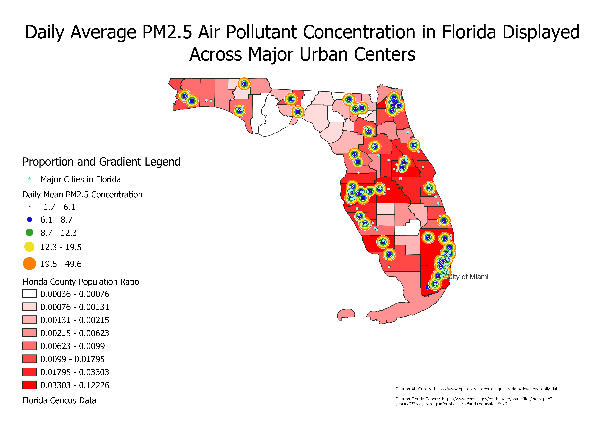

For this assignment, I tried to combine a both a proprtional symbol map and a cloropleth. After a long period of time trying to be creative and join the two map types, it is evident from my end this visualization (with the values I chose) is not too appealing. I began by taking a TIGER shapefile of my home state of Florida by county, then I began looking for enviornmental datsets. I chose the EIA as a source and the envionrnment as a subject because as a Sustianability minor, I plan to pursue some degree of sustainable consulting and I figured if I want to move back to Miami, I ought to know some current trends. Thus, I chose the the PM2.5 pollutant (as it is the most dangerous as they can seep in blood due to size) daily data concentartion. From here, I utilized the gradient mode and chose to measure by size, not color, to show some proportinality. In this case, the larger the area of the circle, the greater concentration of PM2.5 in the air. I then changed the colors on a scale to make it easier to see the overlapping layers. One could argue this method is not very effective as only a handful of areas do not exeed the greatest bracket mean, so most of the areas look similar. I then added point vectors mapping popular cities in the state to see if there was any correlation in disatnce to these major urban centers. I did so using OpenStreetMap and filtering vector points by 'cities' in Florida, then labled 'The City of Miami' since that is where I am from and intend to work. I then wanted to add a cloropleth to more accuratley display population density given that I found a new dataset with specific county populations unlike my previous assignment. In this case, I was able to make a ratio of population by county by dividing individual populations from the total state population. Despite it being frowned upon for using red as a gradient color, I found that it brought out the colors of the porportion symbols better than any other color. I used the Equal Count method so most of the map would have shading since a few counties dominate population under Natural Breaks. My map is complete after adding the legend and other elemnets. Given the end result, the map illustartes that higher concentration of PM2.5 appear to be around clusters of 2 or more cities on average as one might expect. It is interesting to see that the West coast of the state near Naples and Sarasota have the biggest conentration of proportion points under the maximum average, meaning that despite having a cluster of cities and a few proportion points with maximum mean concentartion, on average they have cleaner air comapred to other metro areas like Miami-Dade in the Southeast and Jacksonville in the Northeast. It could potentially be infrastructure, policy, or geography. It would have been more interesting to map a dataset of wind drafts from the coast and see if the Gulf simply pumps cleaner air than the Atlantic.
